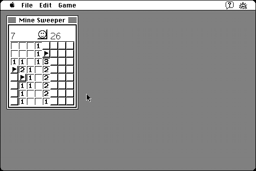

Download
MineSweeper.zip (29K) Mine Sweeper 1.0 repackaged into a zipped hfs disk image and checksum file. The disk image can be mounted with Mini vMac.
MineSweeper.sit (29K) Mine Sweeper 1.0 in the original format.
copyright: Ryutaro Sakaki, Noriaki Misawa
mod date: Jul 3, 1996
license: Freeware
last known url
(gone)
A Macintosh version of the popular puzzle game. The documentation is in Japanese, but I was able to figure out how to play the game. A single click plants a flag, double clicking steps on the square. Requires System 7.

If you find these downloads useful, please consider helping the Gryphel Project, which hosts them.
Here are the md5 checksums for the downloads, signed with Gryphel Key 5:
--------- GRY SIGNED TEXT --------- babe0ab5fc61a0809e3f6eb12493ba7e MineSweeper.zip 4ec11f792e239fb106c7ec71e91fd524 MineSweeper.sit ------- BEGIN GRY SIGNATURE ------- Gry/4Xa8CFcUzxdN/BxzFZmQtGtbtDaY1zIZBlTAWOuz4BqLB0sd/6u0Uss48FRJ L/BL4RrxZYp5zW35WXz8brNLUXaLRh0MbWN6EmyhhuX7wruh2PWWwpztg7OdFliv wXkSP8sSMQIkG5YBkVfE+m2RLkde4ayIjoG3YAeG5Jsr+OcYKJ7bPwSyQH4A5bVh -------- END GRY SIGNATURE --------